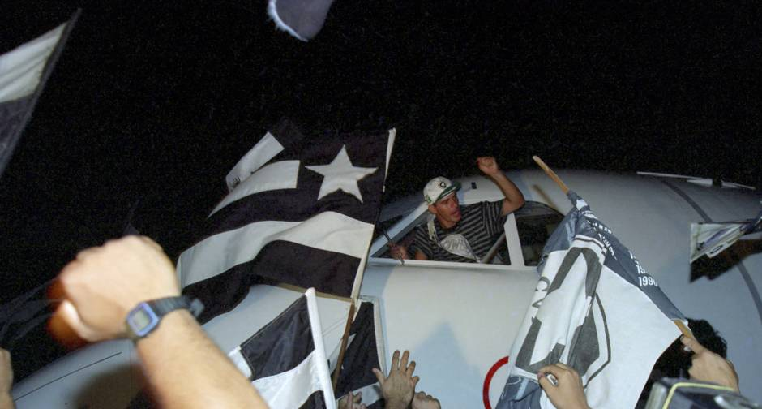

O Botafogo enfrentava o Estudiantes numa terça-feira, no Nilton Santos, na estreia dos dois clubes na fase de grupos da Libertadores. A partida, porém, ficou marcada pela expulsão do zagueiro Andre Luis. Dois minutos depois de fazer o segundo gol do Botafogo naquele jogo, o defensor se desentendeu com o árbitro Carlos Chandía e arrancou o cartão amarelo da mão do juiz. Em uma atitude que surpreendeu aos jogadores dos dois times. Resultado: acabou expulso.
Após vencer o primeiro jogo no Maracanã, por 2×1 o Glorioso ficou a um empate de conquistar o título de Campeão Brasileiro. Resultado esse que se confirmou no jogo de volta, no estádio do Pacaembu, em SP. Fim de jogo e o começo de uma recepção histórica da torcida Alvinegra. Quando o Avião pousou no aeroporto Santos Dumont, milhares de alvinegros aguardavam a aeronave em plena pista de pouso. Quando a aterrissagem foi concretizada, os torcedores enlouquecerem, subiram nas asas da aeronave e escoltaram os jogadores até a sede de General Severiano. Quando de repente aconteceu uma cena emblemática. O Ídolo e autor do gol do título, Túlio Maravilha, segura um peixe e finge abocanhar o animal, fazendo alusão ao mascote do Santos. As ruas do bairro de Botafogo, foram tomadas por uma legião de torcedores completamente eufóricos, o time seguiu para a sede de General Severiano e a festa durou a noite toda.
Em jogo marcado pela confusão que levou à prisão do jogador André Luiz e do presidente do Botafogo, Bebeto de Freitas, por desacato à autoridade, o Náutico venceu o time carioca neste domingo, no Estádio dos Aflitos, por 3 a 0. Jogador e dirigente foram indiciados e liberados na noite deste domingo, mas terão prejuízo: André terá de pagar R$ 10,3 mil de pena.Veja também: Botafogo perde em jogo marcado por prisão de André LuizA confusão começou após André Luiz ser expulso, depois de dar uma entrada por trás em Ruy. O jogador botafoguense chutou então um copo d’água e fez gestos obscenos para a torcida. Quando uma policial militar chegou para algemá-lo, ele puxou o braço e foi cercado por outros policiais que, truculentos, usaram de força para neutralizá-lo. "É um policiamento despreparado", desabafou o atacante Jorge Henrique.André foi preso ao tentar entrar no vestiário, que estava fechado.